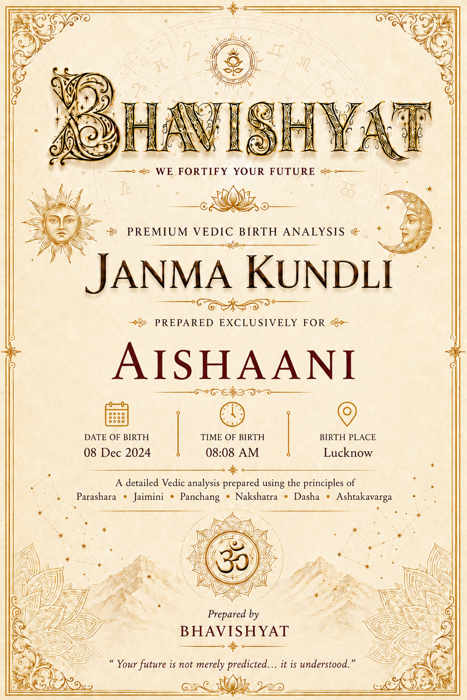
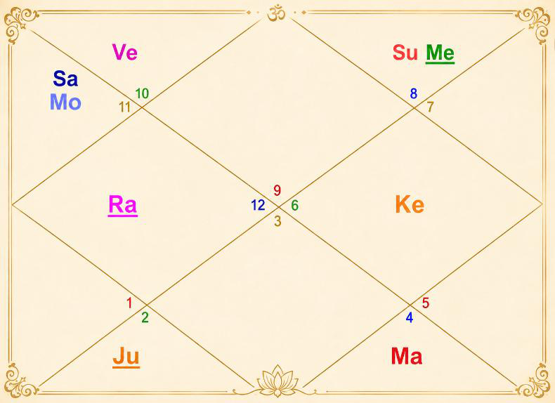

Janma Kundli • Aishaani
| Name | Aishaani | Paksha | Shukla |
| Date of Birth | 08 December 2024 | Tithi | Saptami (7) |
| Time of Birth | 08:08 AM | Nakshatra | Shatabhisha |
| Birth Place | Lucknow | Vaar | Sunday |
| Longitude | 80°56' E | Yoga | Vajra |
| Latitude | 26°50' N | Karan | Vanija |
| Ascendant | Sagittarius | Asc Lord | Jupiter |
| Tithi Lord | Saturn | Tithi Deity | Surya Narayan |
| Nakshatra Lord | Rahu | Nakshatra Deity | Varuna (God of Cosmic Waters) |
| Yoga Deity | Varuna | Karan Deity | Indra |
| Yogi | Moon | Duplicate Yogi | Saturn |
| Abhiyogi | Mercury | Dagdha Rashi | Cancer (4), Sagittarius (9) |

| Planet Distribution | Evenly distributed | ||
| Ascendant | Sagittarius (Dhanu) | Moon / Sun Sign | Aquarius (Kumbha) / Scorpio (Vrishchika) |
| Malefic | Venus (Shukra), Moon (Chandra) | Shunya Nakshatra | Chitra, Vishakha, Anuradha |
| Maraka | Mercury (Budha), Saturn (Shani) | Dasha Balance | 6Y 2M 1D |
| Badhaka | Mercury (Budha) | Mangalik | Dosha cancelled |
| Birth Dasha | Ra-Ve-Ve (1-6-6) | ||
Janma Kundli • Aishaani
| Benefic Years | 19, 22, 26, 28, 31, 35, 37 | ||
| Favourable Days | Sunday, Thursday, Tuesday | ||
| Favourable Planets | Sun, Jupiter, Mars | ||
| Unfavourable Planets | Mercury, Saturn | ||
| Favourable Signs | Aries, Taurus (BAV), Leo, Virgo (SAV) | ||
| Favourable Ratna | Yellow Sapphire | Favourable UpRatna | Yellow Topaz, Citrine |
| Lucky Ratna | Ruby | Favourable Deity | Hanuman |
| Favourable Metal | Bronze | Favourable Colour | Yellow |
| Direction | North-East | Favourable Cereals | Gram |
| Favourable Plant | Peepal, Arka (Giant Milkweed) | ||
| Favourable Temple | Jagannath Temple (Puri) | ||
| Planet | Lordship | Sign | Nakshatra | Nak. Lord | Nak. Count | Nav Tara | Char Karak |
|---|---|---|---|---|---|---|---|
| Sun | 9L | Scorpio (8) | Jyeshtha | Mercury | 22 N | 7 | Atmakarak (Life) |
| Moon | 8L | Aquarius (11) | Shatabhisha | Rahu | 1 N | 8 | Putrakarak (5H) |
| Mars | 5L, 12L | Cancer (4) | Pushya | Saturn | 12 N | 9 | Gnatikarak (6H) |
| Mercury | 7L, 10L | Scorpio (8) | Jyeshtha | Mercury | 22 N | 4 | Matrikarak (4H) |
| Jupiter | 1L, 4L | Taurus (2) | Rohini | Moon | 8 N | 2 | Amatyakarak |
| Venus | 6L, 11L | Capricorn (10) | Abhijit | — | 25 N | 6 | DaraKarak (7H) |
| Saturn | 2L, 3L | Aquarius (11) | Shatabhisha | Rahu | 1 N | 3 | Bhratrikaraka (3H) |
| Rahu | — | Pisces (12) | Uttara Bhadrapada | Saturn | 3 N | 1 | — |
| Ketu | — | Virgo (6) | Uttara Phalguni | Sun | 16 N | 5 | — |
| Debilitated Planet(s) | Mars | Combust Planet(s) | Mercury |
| Retrograde Planet(s) | Mars, Mercury, Jupiter | ||
| Very Strong (35+) | 10H | ||
| Strong (31-35) | 1H, 4H, 5H | ||
| Above Average (28-30) | 6H, 11H | ||
| Below Average (24-27) | 3H, 8H, 9H, 12H | ||
| Weak (21-23) | 2H, 7H | ||
| Very Weak (<21) | — | ||
Janma Kundli • Aishaani
| House | Sign | Planets | SAV | Lords | Aspect |
|---|---|---|---|---|---|
| 1H | Sagittarius (9) | — | 32 | — | — |
| 2H | Capricorn (10) | Venus | 21 | 6L, 11L | Jupiter, Ketu |
| 3H | Aquarius (11) | Moon, Saturn | 26 | 8L; 2L, 3L | Mars |
| 4H | Pisces (12) | Rahu | 32 | — | — |
| 5H | Aries (1) | — | 32 | — | Saturn |
| 6H | Taurus (2) | Jupiter | 30 | 1L, 4L | Ketu |
| 7H | Gemini (3) | — | 22 | — | — |
| 8H | Cancer (4) | Mars | 25 | 5L, 12L | Rahu |
| 9H | Leo (5) | — | 27 | — | — |
| 10H | Virgo (6) | Ketu | 36 | — | Jupiter |
| 11H | Libra (7) | — | 30 | — | Mars |
| 12H | Scorpio (8) | Sun, Mercury | 24 | 9L; 7L, 10L | Saturn, Rahu |
| Sign | Sa | Ju | Ma | Su | Ve | Me | Mo | Ra |
|---|---|---|---|---|---|---|---|---|
| 4 | 3 | 5 | 2 | 5 | 2 | 5 | 3 | 2 |
| 5 | 2 | 6 | 4 | 4 | 2 | 4 | 5 | 6 |
| 6 | 5 | 4 | 4 | 5 | 7 | 6 | 5 | 2 |
| 7 | 3 | 4 | 2 | 4 | 2 | 4 | 5 | 6 |
| 8 | 3 | 4 | 2 | 4 | 2 | 4 | 5 | 6 |
| 9 | 6 | 5 | 4 | 4 | 5 | 4 | 4 | 5 |
| 10 | 0 | 4 | 3 | 3 | 5 | 4 | 2 | 2 |
| 11 | 2 | 5 | 4 | 4 | 4 | 3 | 4 | 3 |
| 12 | 2 | 4 | 3 | 5 | 6 | 8 | 4 | 2 |
| 1 | 5 | 4 | 5 | 3 | 5 | 5 | 5 | 3 |
| 2 | 3 | 5 | 3 | 4 | 4 | 5 | 6 | 3 |
| 3 | 5 | 6 | 1 | 2 | 4 | 0 | 4 | 6 |
Janma Kundli • Aishaani
| Dasha Lord | From | To |
|---|---|---|
| Rahu | 07-Feb-2013 | 08-Feb-2031 |
| Jupiter | 08-Feb-2031 | 07-Feb-2047 |
| Saturn | 07-Feb-2047 | 07-Feb-2066 |
| Mercury | 07-Feb-2066 | 07-Feb-2083 |
| Ketu | 07-Feb-2083 | 07-Feb-2090 |
| Venus | 07-Feb-2090 | 08-Feb-2110 |
| Sun | 08-Feb-2110 | 08-Feb-2116 |
| Moon | 08-Feb-2116 | 08-Feb-2126 |
| Mars | 08-Feb-2126 | 07-Feb-2133 |
| AD Lord | From | To |
|---|---|---|
| Venus | 26-Aug-2024 | 27-Aug-2027 |
| Sun | 27-Aug-2027 | 21-Jul-2028 |
| Moon | 21-Jul-2028 | 20-Jan-2030 |
| Mars | 20-Jan-2030 | 08-Feb-2031 |
| Jupiter | 08-Feb-2031 | 28-Mar-2033 |
| Saturn | 28-Mar-2033 | 09-Oct-2035 |
| Mercury | 09-Oct-2035 | 14-Jan-2038 |
| Ketu | 14-Jan-2038 | 21-Dec-2038 |
| Venus | 21-Dec-2038 | 21-Aug-2041 |
| P. Dasha | From | To |
|---|---|---|
| Venus | 26-Aug-2024 | 25-Feb-2025 |
| Sun | 25-Feb-2025 | 21-Apr-2025 |
| Moon | 21-Apr-2025 | 21-Jul-2025 |
| Mars | 21-Jul-2025 | 23-Sep-2025 |
| Rahu | 23-Sep-2025 | 07-Mar-2026 |
| Jupiter | 07-Mar-2026 | 31-Jul-2026 |
| Saturn | 31-Jul-2026 | 20-Jan-2027 |
| Mercury | 20-Jan-2027 | 24-Jun-2027 |
| Ketu | 24-Jun-2027 | 27-Aug-2027 |
Janma Kundli • Aishaani
| Planet | Chara Karak | House | Lordship | Strength | Nakshatra | Lord | Placement |
|---|---|---|---|---|---|---|---|
| Rahu | — | 4H | — | Strong (31-35) | Uttara Bhadrapada | Saturn | 3H |
| Jupiter | Amatyakarak | 6H | 1L, 4L | Above Avg (28-30) | Rohini | Moon | 3H |
| Saturn | Bhratrikaraka (3H) | 3H | 2L, 3L | Below Avg (24-27) | Shatabhisha | Rahu | 4H |
| Mercury | Matrikarak (4H) | 12H | 7L, 10L | Below Avg (24-27) | Jyeshtha | Mercury | 12H |
| Ketu | — | 10H | — | Very Strong (35+) | Uttara Phalguni | Sun | 12H |
| Venus | DaraKarak (7H) | 2H | 6L, 11L | Weak (21-23) | Uttara Ashadha | Sun | 12H |
| Sun | Atmakarak (Life) | 12H | 9L | Below Avg (24-27) | Jyeshtha | Mercury | 12H |
| Moon | Putrakarak (5H) | 3H | 8L | Below Avg (24-27) | Shatabhisha | Rahu | 4H |
| Mars | Gnatikarak (6H) | 8H | 5L, 12L | Below Avg (24-27) | Pushya | Saturn | 3H |
| Rahu (Janam) | 1 | Moon, Saturn | 10 | 19 | ||
| Jupiter (Sampat) | 2 | 11 | 20 | |||
| Saturn (Vipat) | 3 | Rahu | 12 | Mars | 21 | |
| Mercury (Kshem) | 4 | 13 | 22 | Sun, Mercury | ||
| Ketu (Pratyari) | 5 | 14 | 23 | |||
| Venus (Sadhak) | 6 | 15 | 24 | |||
| Sun (Nidhan) | 7 | 16 | Ketu | 25 | Venus | |
| Moon (Mitra) | 8 | Jupiter | 17 | 26 | ||
| Mars (Ati Mitra) | 9 | 18 | 27 |
| 1st Sade Sati | 08 Dec 2024 – 23 Feb 2028 | ||
| 2nd Sade Sati | 06 Mar 2049 – 07 Apr 2057 | ||
| 3rd Sade Sati | 15 Jan 2079 – 08 Feb 2087 | ||
| Ashtam Shani | 13 Jul 2034 – 27 Aug 2036 | ||
Janma Kundli • Aishaani
| Type | Planet | House | SAV/BAV | From – To |
|---|---|---|---|---|
| Good | Saturn | 5H | 32, 5 | 03 Jun 2027 – 20 Oct 2027; 23 Feb 2028 – 17 Apr 2030 |
| Good | Jupiter | 9H | 27, 6 | 31 Oct 2026 – 25 Jan 2027; 26 Jun 2027 – 26 Nov 2027; 28 Feb 2028 – 24 Jul 2028 |
| Challenging | Saturn | 4H | 32, 2 | 29 Mar 2025 – 23 Feb 2028 |
| HN | Rashi | Planets | Varshphal Yr 2 (Dec'25–Dec'26) | Varshphal Yr 3 (Dec'26–Dec'27) |
|---|---|---|---|---|
| 1 | Sagittarius (9) | — | 4 | 9 Moon, Saturn |
| 2 | Capricorn (10) | Venus | 1 | 4 Rahu |
| 3 | Aquarius (11) | Moon, Saturn | 12 | 1 Jupiter |
| 4 | Pisces (12) | Rahu | 9 | 2 Venus |
| 5 | Aries (1) | — | 3 | 8 Mars |
| 6 | Taurus (2) | Jupiter | 7 Mars | 3 Sun, Mercury |
| 7 | Gemini (3) | — | 5 Jupiter | 10 |
| 8 | Cancer (4) | Mars | 6 Ketu | 5 |
| 9 | Leo (5) | — | 2 Rahu | 7 |
| 10 | Virgo (6) | Ketu | 8 | 11 |
| 11 | Libra (7) | — | 10 Sun, Mercury | 12 Ketu |
| 12 | Scorpio (8) | Sun, Mercury | 11 Moon, Saturn | 6 |
Janma Kundli • Aishaani
Tithi — Shukla Paksha Saptami (Water)
Indicates creativity and high-risk taking ability. Gives radiant, independent and expressive nature to the native.
Moon — Not much Paksha Bali (~45% luminous)
Advisable to perform Ganga Snan by native and her mother periodically. It will also dilute the malefic influence by conjunct Saturn on Moon in birth-chart. Performing Rudrabhishek every birthday is recommended.
Tithi Deity — Surya Narayan
Worship Lord Surya as well as Shani Dev for richness and wealth.
Vaar — Sunday
Makes native ambitious, authoritative, health-conscious, and fosters creativity.
Fire & Health
Parents should feed cows, offer water to the Sun in the morning and recite Aditya Hridya Stotram.
Nakshatra — Shatabhisha (Air)
Good memory, team building nature, good planners and competitive spirit. Shatabhisha indicates aggressive and controlling nature. Also supports healing and medical related profession.
Yoga — Dhruva
Keep fire/electricity equipment(s) safely; don't waste water.
Karan — Vanija (Action)
Aptitude for business, negotiations, finance; excels in trade and commerce. Should serve cow for increasing benefic impact of Karan. Keep cow's image at home.
Dagdha Rashi — Cancer (4), Sagittarius (9)
Light a ghee diya in south-east corner of home and keep silver square piece under the bed.
Planet Distribution
Planets are evenly distributed in the chart, making it overall balanced.
Kal Sarp Yoga
No Kal Sarpa Dosh in the chart of the native.
Janma Kundli • Aishaani
Adventurous, optimistic, philosophical, free-spirited; loves adventure, learning, travel, philosophy, temples, law and new experiences; dislikes restrictions. Graceful appearance, long face, thick nose, ears, teeth and lips.
Free, generous, honest, reliable and God-fearing. Alert, intuitive and reaches the point quickly. Straightforward with a strong sense of justice. Conventional and business-like, sometimes restless and over-anxious. Dual temperament. Versatile and eager to know everything. Cheerful, adaptable and content with a simple life. Lover of art and poetry with creative ability. Exercises strict control over food. Neat, orderly, methodical and diligent. Self-confident and completes work once started. Gains favour from government. Successful as a teacher, public speaker, religious head, judge or advocate.
Weakness — Sagittarius Ascendant
Reckless, blunt, commitment-averse, careless, over-optimistic, impatient, bad eating habits (strong Lagna dilutes these impacts).
Sun — 12th House
Sun is weak in natal chart. Native doesn't like to communicate with many people; good for skill related work. Native may face loneliness issues.
Moon — 3rd House
Talented and intelligent; good for communication, writing and advertisement (career). Mother is courageous nature. Mother's likely health issues (neuro, veins, skin related etc.).
Mars — 8th House
Some litigations (usually property/land related); fire incidents happen; electric equipment keeps giving problems — short circuit, electric fire, MCB trip etc.
Mercury — 12th House
Should beware of negative thoughts and bad company; impacts memory power.
Janma Kundli • Aishaani
Jupiter — 6th House
Native doesn't listen to teacher/elders easily; yoga for success in competition; supportive of medical/legal related profession. Challenging for father's health and finance and maternal family's; gold should be kept securely (chances of loss).
Venus — 2nd House
Brings luxuries in life; makes voice sweet; gives grace and beauty in look.
Saturn — 3rd House
Good for business related/work related travel; slow but stable rise in life.
Rahu — 4th House
People/relatives get much jealous of native; indicates health challenges to mother; good result while living away from home.
Ketu — 10th House
Multiple careers or change in career/workplace frequent; makes native of stubborn nature. Good for property. Nit-picking habit at work.
Sun — 8th Rashi
Never sees death of anyone [no death in presence of this person]; good for research related work.
Moon — 11th Rashi
Indicates health issues to mother; extravagant; avoid studying at night (native likes) — as it may give break in education.
Mars — 4th Rashi
Gives aggression in nature; dominating nature. Blood related/BP disease issues likely to mother; usually much age gap (3, 4+) between native and younger sibling (if any); should get married after 28 years of age.
Janma Kundli • Aishaani
Mercury — 8th Rashi
May give teeth issues, uneven teeth etc.; skin related allergy; makes good at learning/knowledge.
Jupiter — 2nd Rashi
Sweet talker and good at communication.
Venus — 10th Rashi
Good for wealth of parents; comfortable workspace.
Saturn — 11th Rashi
Supports stability of wealth; friends of more age.
Rahu — 12th Rashi
Lot of plans but less execution; more expenditure; travel, foreign income and travel yoga; out of the box thinking; competitive spirit. Indicates change of residence in early childhood.
Ketu — 6th Rashi
Wins competition; very good advisors; attractive/impressive personality; perfectionist at work.
Saturn + Moon, Mars (6, 8)
Blood related problem (BP issues, deficiency etc.); aggression issues to mother of native; differences of opinion between native and her mother.
Saturn + Moon, Ketu (6, 8)
Frequent change of work/workplace; property dispute; health challenges to mother of native.
Sun + Mercury
Good teaching ability; supportive of education, learning.
Moon + Saturn
Gives seriousness in nature; native's mother may be of strict nature or facing long health issue; gives deep thinking ability, comfort in career. Some separation in father's family or they living away. Taking care of health should be priority. Saturn dasha will be good for wealth and success, despite some struggle in life.
Janma Kundli • Aishaani
| Tough Years | 8, 39 | ||
| Good Months of the Year | December – January, March – May | ||
| Challenging Months of the Year | January – March, June – July | ||
| Growth in Life of Parents (Family) | June 2027 – April 2030 | ||
| Lucky People for Native | Aries (1), Taurus (2), Virgo (6) | ||
| Unfavourable People for Native | Cancer (4), Libra (7), Capricorn (10) | ||
| Aptitude | Good intelligence and analytical skills; east direction from residence — opening bank account favourable | ||
| Favourable Months for Starting Education | December – January, May – June | ||
| Strong Lagna | Strong Lagna of the native will ward off problems — relatively fewer difficulties will have to be faced | ||
| Wealth-Giving Dasha / Antardasha | Mars, Jupiter, Venus (current Antar Dasha), Saturn, Rahu, Ketu | ||
| Wealth Note | Strong wealth yoga in chart, but saving would be bit challenging. Multiple sources of gains (income) indicated for native's father. | ||
Janma Kundli • Aishaani
Planet in Houses
Planet in Signs
A Sacred Dedication
for Aishaani's journey ahead
व्यवसायात्मिका बुद्धिरेकेह कुरुनन्दन।
बहुशाखा ह्यनन्ताश्च बुद्धयोऽव्यवसायिनाम्॥ ४१॥
जो व्यक्ति अपने लक्ष्य के प्रति दृढ़ और एकाग्र बुद्धि रखता है, उसकी बुद्धि एक ही दिशा में स्थिर रहती है। लेकिन जिनका मन दृढ़ नहीं होता, उनकी बुद्धि अनेक दिशाओं में भटकती रहती है।
"Those who are resolute in purpose have a single-pointed intelligence, while the minds of those who lack determination wander in many directions."
— Bhagavad Gita, Chapter 2, Verse 41
May Aishaani walk her path with purpose, wisdom and courage — guided by a focused mind, a curious heart, and the determination to turn every dream into reality.